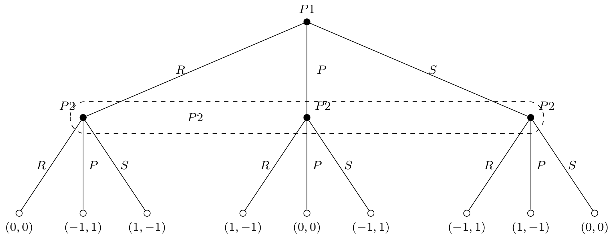
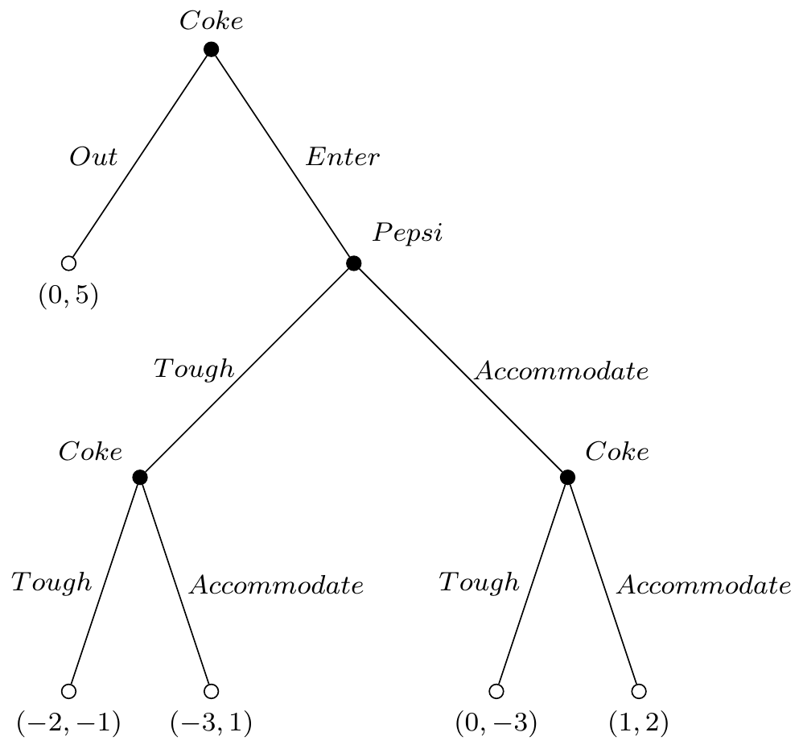
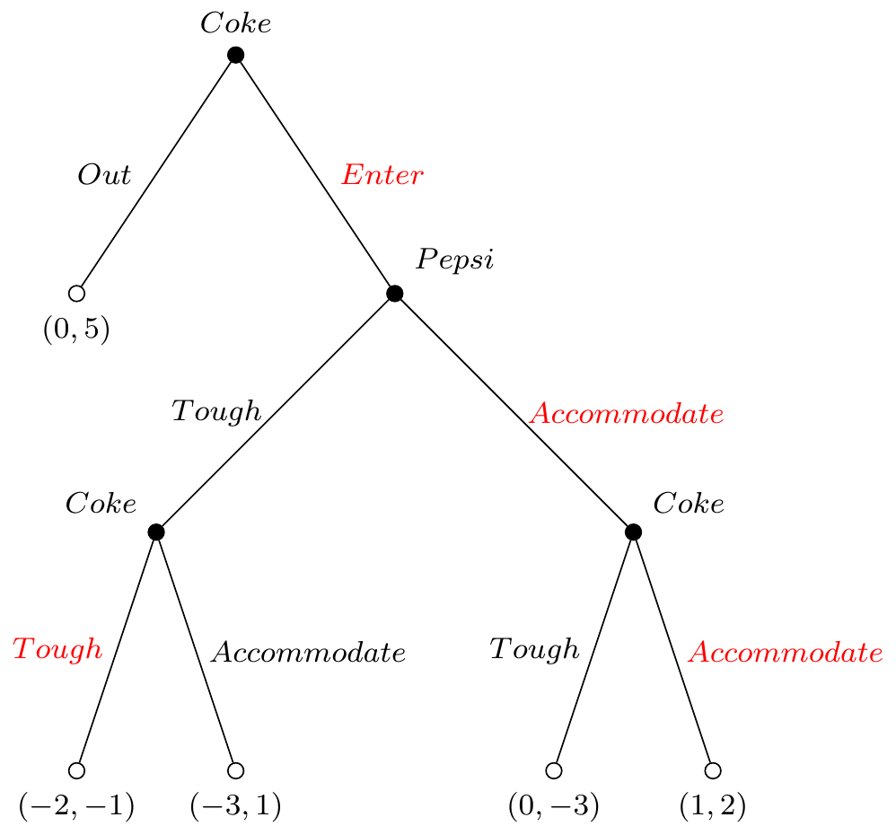
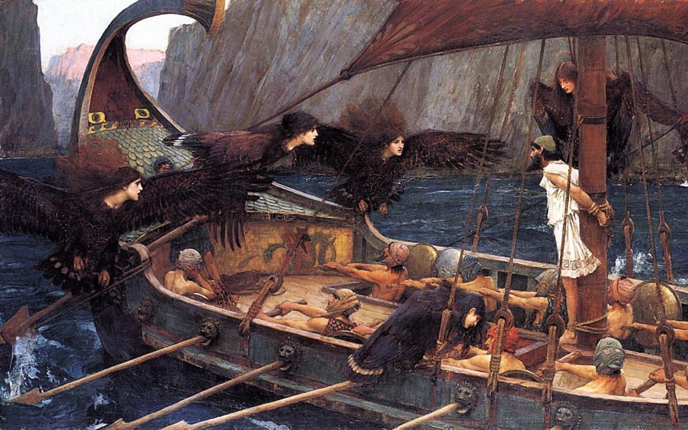
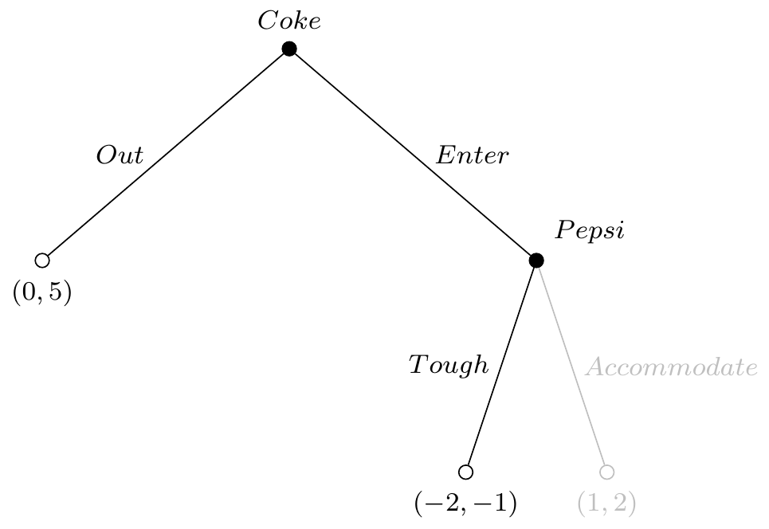
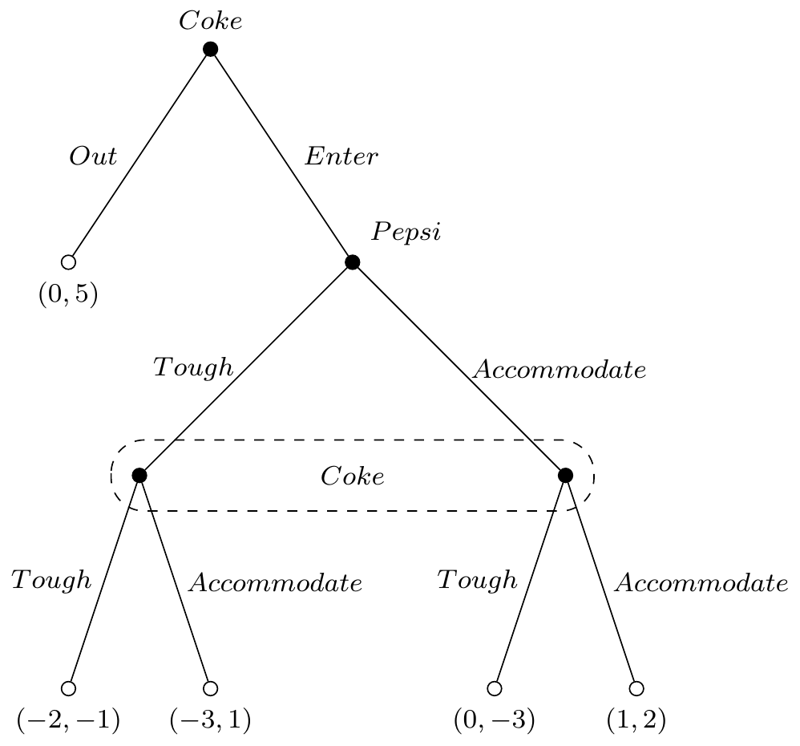
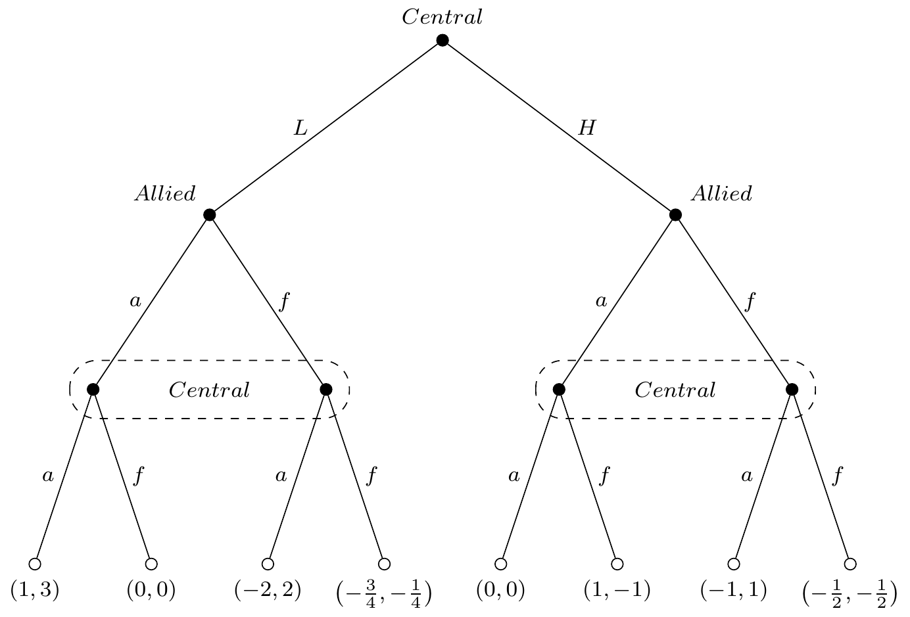
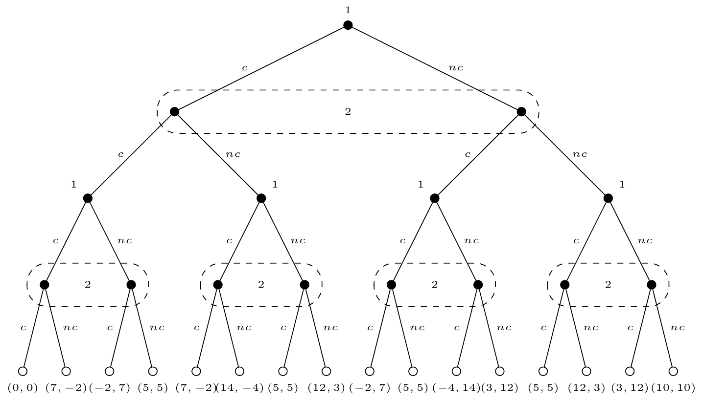

Fundamentals of
Game Theory II
Prague University of Economics and Business
Faculty of Informatics and Statistics
Backward Induction
Extensive Representation of a Game
We have a somehow informal definition of the extensive games, let’s formalize it. There are three consistency requirements:
- Single starting point
- No Cycles
- One way to Proceed
Extensive Representation of a Game
Definition
The predecessors of a node, say \(\alpha\), are those nodes from which you can go (through a sequence of branches) to \(\alpha\).
Extensive Representation of a Game
The three consisntey requirements can be defined using the definition of a predecessor:
- A node cannot be a predecessor to itself.
- A predecessor’s predecessor is also a predecessor: if a node \(\beta\) is a predecessor of \(\alpha\), and a node \(\gamma\) is, in turn, a predecessor of \(\beta\), then \(\gamma\) is a predecessor of \(\alpha\) as well.
- Predecessors can be ranked: if \(\beta\) and \(\gamma\) are both predecessors of \(\alpha\), it must be the case that either \(\beta\) is a predecessor of \(\gamma\) or vice-versa.
- There must be a common predecessor: Consider any two nodes, \(\alpha\) and \(\beta\), neither of which precedes the other. Then there must be a node \(\gamma\) that is the predecessor of both \(\alpha\) and \(\beta\).
Extensive Representation of a Game
Definition (Refresh)
A player’s strategy is a complete, conditional plan of action. It is conditional in that it tells a player which branch to follow out of a decision node if the game arrives at that node. It is complete in that it tells him what to choose at every relevant decision node.
Definition
A mixed strategy, for extensive form games, is defined exactly as it was for strategic form games: a probability distribution over the pure strategies.
Extensive Representation of a Game
We know at least 2 sources of uncertainty in the game:
- Simoultaneity (not really uncertainty in the traditional sense, but a player plays not knowing what the other did)
- Mixed strategies
There is another possible source of uncertainty:
Nature
Extensive Representation of a Game
Definition
A chance node is a node that represents several random possibilities.
For example, the payoffs of the players can depend on:
- Is it raining or not
- Is there traffic or not
- etc
Some or all players might be aware of this randomness or not.
Perfect Information Games
Definition
A perfect information game is a game in which there is no information set (with more than one node).
Corollary
A perfect information game cannot have any simoultaneous moves.
Perfect Information Games
The Entry Game

Perfect Information Games
| P1-P2 | Tough | Accommodate |
|---|---|---|
| Enter | (-2,-1) | (1,2) |
| Out | (0,5) | (0,5) |
NE: * \((Enter, Accommodate)\) * \((Out, Tough)\)
Perfect Information Games
The Entry Game II

Perfect Information Games
| P1-P2 | \(T\) | \(A\) |
|---|---|---|
| \((E,TT)\) | (-2,-1) | (0,-3) |
| \((E,TA)\) | (-2,-1) | (1,2) |
| \((E,AT)\) | (-3,1) | (0,-3) |
| \((E,AA)\) | (-3,1) | (1,2) |
| \((O,TT)\) | (0,5) | (0,5) |
| \((O,TA)\) | (0,5) | (0,5) |
| \((O,AT)\) | (0,5) | (0,5) |
| \((O,AA)\) | (0,5) | (0,5) |
NE:
- \(((E,TA),A)\)
- \(((E,AA),A)\)
- \(((O,TT),T)\), \(((O,TA),T)\), \(((O,AT),T)\), \(((O,AA),T)\)
Backward Induction
Only one of these NEs is credible.
Start from the terminal nodes to verify which choice is rational for the last player, and then remove those branches, turning the last decision node into a terminal node with the rationally expceted payoff. Repeat until the first node, that is the sequentially rational Nash Equilibrium.
Backward Induction

Backward Induction

The Power of Commitment
The Power of Commitment was widely studied by Thomas Schelling, and it is extremely important in a wide variety of context, specially public policy. We will see some examples shortly.
In general, having more alternatives is, at least, weakly better. From the strategic point of view, though, this is not always true. You might optimally remove some alternatives to modify the game you and the other players are playing.
The Power of Commitment

Ulysses and the Sirens, by John William Waterhouse
The Power of Commitment
What if Pepsi could commit to play “tough” in case Coke enters?
For example, suppose Pepsi includes a clause in the C-level executives’ contract saying that if Coke has more than 10% of market share, they will be fired without any compensation.
The Power of Commitment

The Power of Commitment
Now the game’s Nash Equilibrium is \((Out,Tough)\) with payoffs \((0,5)\).
This clause, that was free for Pepsi, increased their payoffs from 2 to 5!
Backward Induction
Kuhn’s (and Zermelo’s) Theorem
Every game of perfect information with a finite number of nodes has a solution to backward induction. Indeed, if for every player it is the case that no two payoffs are the same, then there is a unique solution to backward induction.
The proof is very simple, and it is, by coincidence, a proof by induction:1
- Show that for \(n=1\), where \(n\) is the number of “steps” of the game, the game is solved by finding the best alternative for the playing player.
- Show that, if the game is solvable by backward induction for the \(n-1\) stages, it can also be solved for the \(n^{th}\) stage as well, by using again a best-response by the last playing player.
Subgame Perfect Equilibrium
Motivation
Definition
A game without perfect information is called a game with imperfect information. This is, games where at least once, a player does not know exactly the full set of actions taken before her turn.
We know that sequential games can have many NEs, but some of them might be not credible or reasonable.
Determining this, but in particular for games with imperfect information, is the motivation behind the definition of Subgame Perfect (Nash) Equilibria, SPNE henceforward.
Motivation
Entry Game III

Motivation
| Coke-Pepsi | \(T\) | \(A\) |
|---|---|---|
| \((ET)\) | (-2,-1) | (0,-3) |
| \((EA)\) | (-3,1) | (1,2)* |
| \((OT)\) | (0,5)* | (0,5) |
| \((OA)\) | (0,5)* | (0,5) |
But are all these NEs credible? NO ❌
Motivation
To be credible, the actions taken in the equilibrium strategy profiles, must remain rational after previous moves.
Suppose Coke plays enter, now the game is:

Motivation
This is a simoultaneous game, and then it is more convenient to study it with the strategic form. I will keep the order of the players in the same way as the original way in order to avoid confusion with the order of the payoffs:
| Coke-Pepsi | \(T\) | \(A\) |
|---|---|---|
| \(T\) | (-2,1) | (0,-3) |
| \(A\) | (-3,1) | (1,2) |
And we see that the NEs in this game are \((T,T)\) and \((A,A)\).
Motivation
As a consequence, only NEs that considered this result can be credible NEs. We can rule out \(((OA),T)\).
There might be more NEs, we have not looked for NEs in Mixed Strategies.
Subgames
Definition
A subgame is a part of the extensive form; it is a collection of nodes and branches that satisfies three properties: 1. It starts at a single decision node. 2. It contains every successor to this node. 3. If it contains any part of an information set, the it contains all the nodes in that information set.
Subgames

Subgames

Subgame Perfect Equilibrium SPNE
Definition
The strategy profile \((s_1,s_2)\) is a Subgame Perfect Nash Equilibrium (SPNE) if, for every subgame \(g\), (\(s_1(g),s_2(g)\)) is itself a Nash Equilibrium of the subgame \(g\).
Proposition
In a game of perfect information, the subgame perfect equilibria are precisely the backward induction solutions. Hence, whenever the backward induction solution is unique, there is a single subgame perfect equilibrium.1
Example
In the context of the World War I, there were some spontaneous periods of truce in the trenches between the Allies (🇬🇧, 🇫🇷, 🇺🇸, 🇷🇺) and the Central Powers (🇩🇪, 🇦🇹-🇭🇺,🇹🇷)
Supose that there are two possible levels of preparedness for the soldiers: high (H) or low (L). Regardless of the level of preparedness each side has available two options on what it can do, fight (f), or accommodate (a).
Example
For example, if the level of preparedness is:
- high, then the strategic form (sub)game is as follows:
| C-A | f | a |
|---|---|---|
| f | \(\left(-\frac{1}{2},-\frac{1}{2}\right)\) | \((1,-1)\) |
| a | \((-1,1)\) | \((0,0)\) |
- low, then the strategic form (sub)game is as follows:
| C-A | f | a |
|---|---|---|
| f | \(\left(-\frac{3}{4},-\frac{1}{4}\right)\) | \((0,0)\) |
| a | \((-2,2)\) | \((1,3)\) |
Example

The SPNE is \(((L,af),af)\)
Finitely Repeated Games
Finitely Repeated Games
Many times, players will interact more than once, i.e. the game will be played repeatedly. There are important consequences if the game is played a finite number of times, or infinite many times that we will discuss now. The most important issue at hand is that repeated games might have very different outcomes to the case the game is played just once.
The key here is that if a player believes a bad behavior today could cause some future punishment from the other side (or vice-versa), i.e. the prospect of reciprocity.
Repeated Prisoner’s Dilemma
- Consider the payoff’s of the Calvin and Klein’s game we reviewed a while ago.
- Suppose that the final payoffs are just the sum of the payoffs of each game (no discount).
- Suppose players know the outcome of the first game after they have to play again.
Repeated Prisoner’s Dilemma

Repeated Games
Definition
A repeated game is defined by a stage game \(G\) and the number of its repetitions, say \(T\). The stage game \(G\) is a game in strategic form: \(G=\{S_i,\pi_i ; i=1,\dots,N\}\) where \(S_i\) is player \(i's\) set of strategies and \(\pi_i\) is his payoff function [and it depends on \((s_1,s_2,\dots,N)\)].
- If \(T<\infty\), the game is called finitely repeated game,
- If \(T=\infty\), the game is called infinitely repeated game.
Examples
- The “Lame Duck” Period in Politics: Elected officials might cooperate at the beginning of their term to gain favor and pass legislation with the support for future bills. If there is no re-election, in the latest months the officials might try to pass controversial bills and pardons.
- Military Occupations and withdrawal date: Locals that have to decide to support occupying force or insurgents, the value of supporting occupying forces vanishes at the departure date.
- Short-term Humanitarian Interventions: Local contractors provide service for payment for NGOs.
Finitely Repeated Games
By looking at the Repeated Prissoner’s dilemma, how can we solve this problem?
Finitely Repeated Games
This is clearly equivalent to a game with several steps, and it is solved in the same way, backward induction.
- In the last stage the game is played no more, so both agents play this game as a single shot game.
- This will determine the payoffs for the previous stage, which then will be equivalent to a last stage again.
- Repeating this, players can forecast the whole path of the game, and play accordingly.
Finitely Repeated Games
Corollary
In any finitely repeated game, one SPNE of the repeated game is for players to play a one-stage NE over and over again.
Proposition
Consider a finitely repeated game \((G,T)\) with \(G=\{S_i,\pi_i ; i=1,\dots,N\}\). Suppose the stage game \(G\) has exactly one NE, say \(s^*=(s_1^*,s_2^*,\dots,s_N^*)\). Then the repeated game has a unique SPNE. In this equilibrium, player \(i\) plays \(s_i^*\) at every one of the \(T\) stages, regardless of what might have been played, by her or any of the others, in any previous stage.
Finitely Repeated Games
Proof
- In the last stage, surely \(s^*\) will be played, as is the \(NE\) for a single NE of the game.
- In the stage before, the payoffs are determined, as in the next stage, whatever is decided, \(s^*\) will be played in the next stage, so this will be traeted as an independent stage, and then \(s^*\) will be played as well.
- Iterate, and you find that \(s^*\) is played in every stage of the game.
Finitely Repeated Games
This might be different if in a stage, there is more than a single \(NE\).
Consider the Modified Prisonner’s Dilemma:
| 1-2 | \(c\) | \(nc\) | \(pc\) |
|---|---|---|---|
| \(c\) | (0,0) | (7,-2) | (3,-1) |
| \(nc\) | (-2,7) | (5,5) | (0,6) |
| \(pc\) | (-1,3) | (6,0) | (3,3) |
Here we have two NE \((c,c)\) and \((pc,pc)\).
Finitely Repeated Games
- In this situation, in the last stage, \((pc,pc)\) is possible, and it could be a prefereable equilibrium for both players.
- A player could decide which \(NE\) to play in the last stage, conditional on what she observed in the previous stage: play \(pc\) if \(nc\) was observed in the previous stage (the cooperative behavior), and play \(c\) if \(c\) or \(pc\) was observed (the non-cooperative behavior).
- Note that by playing \(c\) in the first stage, and expecting \(nc\), a player could get a higher payoff, however she can anticipates a punishment, and would trade-off short term gains for future lower payoffs.
Infinitely Repeated Games
Infinitely Repeated Games
- We have disregarded something so far, the discount factor \(\delta\in(0,1)\).
- It is reasonable to assume, as we often do in economics and finance, that agents are impatient, or that they value more 1 today, than 1 tomorrow.
- For finitely repeated games this is not that serious, as payoffs (lifetime payoffs) remain finite. This is no longer the case with infinitely repeated games.
Infinitely Repeated Games
Let’s put some shape on the lifetime payoffs of player \(i\). Let \(\pi_{it}\) be the payoff of player \(i\) at stage \(t\), and \(\delta\) the discount factor. The lifetime payoff, in an infinitely repeated game (i.e. when \(T\rightarrow\infty\)) is:
\[\pi_{i0}+\delta\pi_{i1}+\delta^2\pi_{i2}+\dots=\sum_{t=0}^\infty \delta^t\pi_{it}\]
It is trivial to show that if \(|\pi_{it}|<\infty\) \(\forall t\), then this sum is finite.
Infinitely Repeated Games
Fact
When the stage-game payoffs are constant, say \(\pi\), then the lifetime payoffs are given by \(\frac{\pi}{1-\delta}\). This is easily shown using the fact that \(0<\delta<1\), and the geometric series.
Infinitely Repeated Games
Let’s go back to the original Prisoner’s dilemma.
| 1-2 | \(c\) | \(nc\) |
|---|---|---|
| \(c\) | (-5,-5) | (0,-15) |
| \(nc\) | (-15,0) | (-1,-1) |
Where the NE was clearly \((c,c)\). Consider \(\delta=0.9\).
Infinitely Repeated Games
Suppose now that the following strategy is played:
- Play \(nc\) and observe the outcome.
- Play \(c\) forever if previously \(c\) was observed.
Can this be a SPNE?
Infinitely Repeated Games
Suppose the other player plays \(nc\):
- If you play \(nc\), the next period \(nc\) will be played, and so on. Your lifetime (future) payoff is \[\Pi_{nc}=-1-\frac{0.9}{1-0.9}=-10\]
Infinitely Repeated Games
Suppose the other player plays \(nc\):
- If you play \(c\), you get benefits today, but in every future iteration you are stuck in \((c,c)\). Your lifetime (future) payoff is \[\Pi_c = 0 - \frac{15\times 0.9}{1-0.9}=-135\]
Clearly it compensates to be good!
Infinitely Repeated Games
Can we find \(\delta\) such that the crime pays off?
\[\Pi_{nc}=-1-\frac{\delta}{1-\delta}\leq 0-\frac{15\delta}{1-\delta}=\Pi_c\]
\[-1\leq\frac{-14\delta}{1-\delta}\ \Rightarrow\ 1-\delta \geq 14\delta\ \Rightarrow\ \delta\leq \frac{1}{15}\]
In order to betray my colleague, I need to really care little about the future!
Dynamic Games and an Application to the Tragedy of the Commons
Dynamic Games
While repeated games are also a dynamic game, they have a particular shortcoming: The same stage is repeated over and over, that is:
- Players are the same
- Strategies are the same
- Payoffs are the same
- Everything is the same!
Dynamic Games
Dynamic Games allow us to introduce slight modifications to the game that is played every time, and thus, we can model more realistic situations.
The Commons Problem
- The game environment at period \(t\) is the size of the resource stock in that period, \(y_t\geq 0\).
- The resource can be accessed by any of (w.l.g.) 2 players.
- Let \(c_{it}\geq 0\) denote player’s \(i\) consumption at period \(t\). Let \(C_t=c_{1t}+c_{2t}\).
- Player \(i\)’ instantaneous utility function is \(u_i(c_{it})\), with \(u_i'>0\) and \(u_i''<0\). Moreover, let \(u_i(c_{it})=\ln (c_{it})\)
The Commons Problem
- Note again, that for every \(t\), it must hold that \(C_t\leq y_t\)
- Let savings be defined as \(S_t=y_t-C_t\).
- Assume the savings have a return, through a production function, \(y_{t+1}=10\times\sqrt{S_t}\)
- Assume further that everyone shares the same discount factor \(0<\delta<1\).
The Commons Problem
We will try to answer some important questions with this model:
- How does \(y_t\) evolve over time?
- Is there a level for \(y_t\) that can be sustained?
- What is the socially optimal sustainable \(y\)?
- Does strategic interaction lead to overextraction of the resource?
The Commons Problem
Let’s look first for a social optimum. For now, let’s assume there are two periods only, and we will start by solving for the last period (note the lack of time index).
\[ \max _{c_1+c_2\leq y} \ln (c_1) + \ln (c2) \]
But given this is the last period, it only make sense that we use all resources, and then \(c_1+c_2=y\), or \(c_1=y-c_2\), that we can substitute back.
The Commons Problem
\[ \max _{c_1} \ln (c_1) + \ln (y-c_1)\]
Which leads to the FOC \[\frac{1}{c_1^*}-\frac{1}{y-c_1^*}=0\ \Leftrightarrow\ c_1^*=\frac{y}{2}\]
Of course, \(c_2^*=c_1^*=\frac{y}{2}\). An expected result given the concavity of the utility function.
The Commons Problem
The (socially optimal) utility for each player in the last stage is then \[V^1(y)=\ln \left(\frac{y}{2}\right)=\ln (y) - \ln (2)\]
Now, we need to solve the problem in the first period:
\[\max_{c_1+c_2\leq y} \ln (c_1) + \ln (c_2) + 2\delta V\left(10\times\sqrt{y-c_1-c_2}\right)\]
The Commons Problem
Let’s focus in the second part:
\[ \begin{aligned} V^1\left(10\times\sqrt{y-c_1-c_2}\right)=\ln \left(10\times\sqrt{y-c_1-c_2}\right) - \ln (2) \end{aligned} \] and \[ \ln \left(10\times \sqrt{y-c_1-c_1}\right)= \ln (10) + \frac{1}{2} \ln (y - c_1 - c_2) \]
The Commons Problem
\[ V^1\left(10\times\sqrt{y-c_1-c_2}\right) = \frac{1}{2} \ln (y - c_1 - c_2) + \ln (5) \]
Note that \(\ln (5)\) is a constant, and then in the maximization problem it is irrelevant. Thus, our maximization problem is equivalent to:
\[\max_{c_1+c_2\leq y} \ln (c_1) + \ln (c_2) + \delta \ln\left(y-c_1-c_2\right)\]
The Commons Problem
The FOCs are:
\[ \begin{aligned} \frac{1}{c_1}&=\frac{\delta}{y-c_1-c_2}\\ \frac{1}{c_2}&=\frac{\delta}{y-c_1-c_2} \end{aligned} \]
From where we obtain that \(c_1^*=c_2^*\).
The Commons Problem
From there we substitute \(c\) in either to get:
\[ \begin{aligned} \frac{1}{c}&=\frac{\delta}{y-2c}\\ y-2c &= \delta c\\ c&=\frac{y}{2+\delta} \end{aligned} \]
Note that a smaller share of the available resources is being consumed: \(\frac{1}{2}>\frac{1}{2+\delta}\). There is optimally some investment, and this investment is larger, the larger agents value the future (the larger \(\delta\)).
The Commons Problem
Now, we can substitute back into the lifetime utility to obtain the each consumer’s socially optimal lifetime utility. Noting that \(\delta\) is a constant, it can be shown (with some algebra) that:
\[ \begin{aligned} V^2(y) = \left(1+\frac{\delta}{2}\right) \ln (y) + K_0 \end{aligned} \]
With \(K_0=-\ln (2+\delta) + \delta \ln (5) + \frac{\delta}{2} \ln \left(\frac{\delta}{2+\delta}\right)\) a constant.
The Commons Problem
But what about more than two periods?
In the first period now, the problem is:
\[ \max_{c_1+c_2\leq y} \ln (c_1) + \ln (c_2) + 2\delta V^2\left[10\sqrt{y-c_1-c_2}\right] \] or \[ \max_{c_1+c_2\leq y} \ln (c_1) + \ln (c_2) + \delta\left(1+\frac{\delta}{2}\right)\ln (y-c_1-c_2) \]
The Commons Problem
The FOCs are:
\[ \begin{aligned} \frac{1}{c_1}&=\left(1+\frac{\delta}{2}\right)\frac{\delta}{y-c_1-c2}\\ \frac{1}{c_2}&=\left(1+\frac{\delta}{2}\right)\frac{\delta}{y-c_1-c2} \end{aligned} \]
Again, with the consequence of \(c_1=c_2=c\).
The Commons Problem
Substituting in either:
\[ \begin{aligned} \frac{1}{c}&=\left(1+\frac{\delta}{2}\right)\frac{\delta}{y-2c}\\ 2y-4c&= (2+\delta)\delta c \\ c &= \frac{2y}{\delta(2+\delta)+4} = \frac{2y}{4+2\delta+\delta^2}\\ &= \frac{y}{2(1+\frac{\delta}{2}+\frac{\delta^2}{4})} \end{aligned} \]
The Commons Problem
The socially optimal utility for each player is:
\[ \begin{aligned} V^3(y)=\left(1+\frac{\delta}{2}+\frac{\delta^2}{4}\right) \ln (y) + K_1 \end{aligned} \]
With \(K_1\) a constant, in a simmilar fashion as we described \(K_0\) for \(V^2(y)\).
The Commons Problem
Let’s wrap this up:
| Periods remaining | \(c^*\) as a fraction of \(y\) |
|---|---|
| 1 | \(\frac{1}{2}\) |
| 2 | \(\frac{1}{2\left(1+\frac{\delta}{2}\right)}\) |
| 3 | \(\frac{1}{2(1+\frac{\delta}{2}+\frac{\delta^2}{4})}\) |
What is the pattern?
The Commons Problem
For \(T\) periods remaining, we would have:
| Periods remaining | \(c^*\) as a fraction of \(y\) |
|---|---|
| \(T\) | \(\frac{1}{2\left(1+\frac{\delta}{2}+\frac{\delta^2}{4}+\dots+\left(\frac{\delta}{2}\right)^{T-1}\right)}\) |
Or \(\frac{1}{2\left(\sum_{t=0}^{T-1} \left(\frac{\delta}{2}\right)^{t}\right)}\), but remember that \(\delta\in(0,1)\), then this sum is the geommetric series.
The Commons Problem
| Periods remaining | \(c^*\) as a fraction of \(y\) |
|---|---|
| \(T\) | \(\frac{1}{2\left(\frac{1-\left(\frac{\delta}{2}\right)^T}{1-\frac{\delta}{2}}\right)}\) |
And if \(T\rightarrow\infty\), we get that at every period, consumers will consume:
\[c(y)=\left(1-\frac{\delta}{2}\right) \frac{y}{2}\]
The Commons Problem
With a simmilar trick, it can be shown that the optimal lifetime (individual) utility is:
\[V(y)=\frac{1}{1-\frac{\delta}{2}} \ln (y) + K\]
With \(K\) some constant, found in a simmilar fashion to \(K_0\) and \(K_1\).
The Commons Problem
Is there a stable output level?
\[C(y) = 2 c(y) = \left(1-\frac{\delta}{2}\right) y\ \Rightarrow\ S(y)=\frac{\delta}{2}y\]
Which in turns imply that:
\[ y_{t+1}= 10\times\sqrt{\frac{\delta}{2}y_t} \]
The Commons Problem
If output is stable, then \(y_t=y_{t+1}\)
\[ y= 10\times\sqrt{\frac{\delta}{2}y}\ \Rightarrow\ y = 50\delta\]
So for example if \(\delta=0.8\), then output is stable when it reaches \(y=40\). Then, it stays forever at that level. Individual consumption is therefore 12 units forever for each.
The Commons Problem
Of course, this equilibrium does not use any game theory, a Social Optimum is imposed by a Benevolent Dictator. Let’s study the non-cooperative game now.
We need to solve by backward induction, and we can save some work, as the last stage will be equal,1 both try to consume everything, and end up splitting \(y\).
The Commons Problem
For the previous period, things are different. Each agent will solve individually their own maximization problem:
\[\max_{c_1\leq y-c_2} \ln (c_1) + \delta W^1\left[10\sqrt{y-c_1-c_2}\right]\]
In this case \(W^1\) plays the same role \(V^1\) played in the SO. Moreover, they conincide for the last period, as already stated. This will not be the case for the other periods, that that’s why we use \(W\) instead of \(V\).
The Commons Problem
Remember again, that \[W^1(y)=\frac{1}{2} \ln (y - c_1 - c_2) + \ln (5)\] And therefore the maximization problem is equivalent to:
\[\max_{c_1\leq y-c_2} \ln (c_1) + \frac{\delta}{2} \ln \left(y-c_1-c_2\right)\]
The Commons Problem
That yields FOC:
\[\begin{aligned} \frac{1}{c_1}&=\frac{\delta/2}{y-c_1-c_2}\\ y-c_1-c_2&=\frac{\delta c_1}{2}\\ c_1&= \frac{2(y-c_2)}{2+\delta} \end{aligned}\]
By symmetry \(2\)’s best response is \(c_2=\frac{2(y-c_1)}{2+\delta}\)
The Commons Problem
Substituting one into the other:
\[\begin{aligned} c_1 &= \frac{2\left(y-\frac{2(y-c_1)}{2+\delta}\right)}{2+\delta}\\ (2+\delta)c_1&=2y-\frac{4y}{2+\delta}+\frac{4c_1}{2+\delta}\\ \left[(2+\delta)^2-4\right]c_1&=2\delta y\\ c_1 &= \frac{2\delta}{(2+\delta)^2-4}y=\frac{y}{2+\frac{\delta}{2}} \end{aligned}\]
The Commons Problem
By symmetry we have that \(c_1=c_2=\frac{y}{2+\frac{\delta}{2}}=\frac{y}{2\left(1+\frac{\delta}{4}\right)}\).
These consumptions are already larger than the situation we observed in the social optimum: \(c=\frac{y}{2\left(1+\frac{\delta}{2}\right)}\).
Replace in the utility function and we obtain:
\[W^2(y)=\left(1+\frac{\delta}{2}\right) \ln (y) + C_1 \]
Where \(C_1\) is a constant found in the same fashion as \(K_1\).
The Commons Problem
Now, in the same way as we did for the SO, we replace for a third period, and get the following maximization problem:
\[\begin{align} \max_{c_1\leq y-c_2} \ln (c_1) + \frac{\delta}{2}\left(1+\frac{\delta}{2}\right) \ln (y-c_1-c_2) \end{align}\] with FOC \[\frac{1}{c_1}=\frac{\frac{\delta}{2}\left(1+\frac{\delta}{2}\right)}{y-c_1-c_2}\]
The Commons Problem
For now, let \(\psi = \frac{\delta}{2}\left(1+\frac{\delta}{2}\right)\):
\[ \begin{aligned} y-c_1-c_2 &= c_1 \psi \\ c_1 &= \frac{y-c_2}{1+\psi} \end{aligned} \]
By symmetry \(c_2=\frac{y-c_1}{1+\psi}\).
The Commons Problem
\[ \begin{aligned} c_1 &= \frac{y-\frac{y-c_1}{1+\psi}}{1+\psi}\\ (1+\psi)^2c_1 &= y(1+\psi)-y+c_1\\ c_1 &= \frac{y \psi}{(1+\psi)^2-1}=\frac{y}{2+\psi}\\ c_1 &= \frac{y}{2+\frac{\delta}{2}\left(1+\frac{\delta}{2}\right)}=\frac{y}{2+\frac{\delta}{2}+\left(\frac{\delta}{2}\right)^2} \end{aligned} \]
The Commons Problem
Note now that, if we generalize this for \(T\), the denominator becomes:
\[ \begin{aligned} 2+\frac{\delta}{2}+\left(\frac{\delta}{2}\right)^2+\dots+\left(\frac{\delta}{2}\right)^{T-1}&=\\ 1 + \underbrace{1 +\frac{\delta}{2}+\left(\frac{\delta}{2}\right)^2+\dots+\left(\frac{\delta}{2}\right)^{T-1}}_{\text{geometric series}}&=\\ 1+\frac{1-\left(\frac{\delta}{2}\right)^T}{1-\frac{\delta}{2}}=\frac{2-\frac{\delta}{2}-\left(\frac{\delta}{2}\right)^T}{1-\frac{\delta}{2}}&= \end{aligned} \]
The Commons Problem
And as \(T\rightarrow\infty\):
\[\frac{2-\frac{\delta}{2}-\left(\frac{\delta}{2}\right)^T}{1-\frac{\delta}{2}}\rightarrow \frac{2-\frac{\delta}{2}}{1-\frac{\delta}{2}}\]
And \[c_1=\frac{1-\frac{\delta}{2}}{2-\frac{\delta}{2}}y>\underbrace{\frac{1-\frac{\delta}{2}}{2} y}_{\text{Social Optimum}}\]
The Commons Problem
So consumption seems to be larger… how can this be?
The consumption share of output is larger, but output need not be the same! Indeed most likely it will be lower. What we showed is that both consumers will overconsume.
Let’s check the steady state for the output in this case.
The Commons Problem
Remember, if \(y\) is a steady state, it means that \(y_{t+1}=y_t\). For that we have that:
\[y=10\times\sqrt{y-c_1-c_2}=10\times\sqrt{y-\frac{2-\delta}{2-\frac{\delta}{2}}y}\] must be true.
The Commons Problem
\[ \begin{aligned} y^2&=100y\left(\frac{\delta/2}{2-\delta/2}\right)\\ y&= 50\frac{\delta}{2-\frac{\delta}{2}} \end{aligned} \]
Again if \(\delta=0.8\) we have that \(y=25\). We can see that both players will overconsume and achieve a much lower steady state (and therefore consumption).
The Commons Problem
Indeed, let \(\delta=0.8\)
| Consumption Rate | Steady Output | Perpetual Consumption | |
|---|---|---|---|
| Social Optimum | \(\frac{1-\frac{\delta}{2}}{2}=0.3\) | \(40\) | \(12\) |
| Non Coop Eq | \(\frac{1-\frac{\delta}{2}}{2-\frac{\delta}{2}}=0.375\) | \(25\) | \(9.375\) |
Bibliography
Bibliography
These slides took definitions and examples from the book:
Strategies and Games: Theory and Applications from Prajit Dutta. 2001 MIT Press. Chapters 11, 13-15, 18.

Economics of Incentives